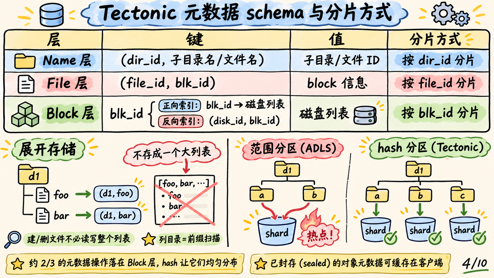

Tectonic 是 Facebook（现 Meta）的数据中心级文件系统：一个集群就能装下整个数据中心、上 EB 级的数据。它把原来分散在 Haystack、f4 和几十个 HDFS 集群里的照片与数仓数据合并到一起，靠三件事撑住：元数据分层并按 hash 打散、按"流量组"而不是按应用分资源、让客户端针对每种租户定制读写方式。结果是数仓集群数降到原来的 1/10，Blob 存储的有效复制因子从 5.3 倍降到约 2.8 倍，性能和原来的专用系统持平。
先问你一个问题：你往 Facebook 上传一张 2 MB 的照片，Facebook 要为它买多少硬盘？
直觉答案大概是"存三份，6 MB 左右"。2010 年代的 Facebook 也是这么设计的：热照片放在 Haystack 里，三副本，再叠一层 RAID-6，理想的有效复制因子是 3.6 倍。可实际跑下来，这个数字变成了 5.3 倍（§2.1）。你那张 2 MB 的照片，背后占着 10.6 MB 的硬盘。
多出来的 1.7 倍去哪了？答案有点反直觉：不是装数据装满了，是硬盘"转不过来"了。硬盘越做越大，但每块盘每秒能做的随机读写次数（IOPS）十几年来几乎没变。于是每 TB 容量分到的 IOPS 越来越少。热照片访问频繁，为了凑够 IOPS，Facebook 只能多买硬盘，买回来的容量却空着。
与此同时，在同一个数据中心的另一头，数据仓库正为另一种病头疼：HDFS 只有一个 NameNode 管元数据，一个集群装不了多少文件，于是一个数据中心要开几十个 HDFS 集群。一边是 Haystack 的硬盘容量闲着，一边是数仓的磁盘在峰值时不够用，两边的资源却没法互相借。
Facebook 当时的存储，论文用了一个词：constellation，星座。每个专用系统都是一颗星，各自为某一种负载调到最优，彼此之间不连通。
打个比方：这像几户人家各租一套房，每家都按自己最忙那天的需求配了厨房。A 家过年请客，厨房不够用；隔壁 B 家常年下馆子，厨房一年开不了几次火。单看每家都没毛病，合起来看，城里一半的厨房在吃灰。
| 旧系统 | 负载 | 毛病（§2） |
|---|---|---|
| Haystack | 热 Blob（刚上传的照片、视频） | IOPS 不够，被迫多买盘，有效复制因子从 3.6× 涨到 5.3× |
| f4 | 温 Blob（老照片） | RS(10,4) 编码、两个数据中心，复制因子 2.8×；IOPS 富余却借不出去 |
| HDFS（几十个集群） | 数据仓库（Spark、Presto、AI 训练数据） | 单 NameNode 限制集群规模；数据集要在集群间"装箱"，大数据集还得拆开放 |
更糟的是趋势。越来越多的媒体是"阅后即焚"型的：上传后在 Haystack 里待几天就删了，根本活不到被迁去 f4 的那一天。于是越来越多的数据按 5.3 倍的最贵价格存着。
数仓那边的"装箱问题"也很磨人：每个数据集要找一个容量和吞吐都还有余量的 HDFS 集群放进去，这是一个二维装箱问题。数据集太大放不进单个集群，就得拆开，计算引擎再自己去几个集群里拼。存储的边界，变成了上层应用的负担。
所以 Facebook 需要的不是再做一个更好的专用系统，而是一个足够大、能把大家都装进去，又不让任何一家吃亏的系统。
Tectonic 这个名字就是答案：板块构造。把漂着的小岛合成一整块大陆，一个集群覆盖整个数据中心。合并之后，照片的 IOPS 需求和数仓的带宽需求在同一批硬盘上互补，谁忙谁用。
但"合并"四个字说起来容易，做起来要过三道关，论文开篇就列了出来：
"In building Tectonic, we confronted three high-level challenges: scaling to exabyte-scale, providing performance isolation between tenants, and enabling tenant-specific optimizations."
（构建 Tectonic 时，我们面对三个高层挑战：扩展到 EB 级、租户之间的性能隔离、支持租户各自的定制优化。）—— §1
说白了：第一，装得下；第二，住在一起不打架；第三，合租以后每家的日子不能比独居时差。下面一关一关看。
先看全貌。Tectonic 一个集群里只有两样东西有状态：存数据的 Chunk Store 和存目录树的 Metadata Store。剩下的组件全是无状态的，包括所有读写都要经过的 Client Library，以及做垃圾回收、修复、搬迁的后台服务。
flowchart LR
APP["Tenant
Blob / Warehouse"] --> CL["Client Library
stateless"]
CL -->|1 lookup dir| NL["Name layer"]
CL -->|2 list blocks| FL["File layer"]
CL -->|3 locate chunks| BL["Block layer"]
NL --- KV[("ZippyDB
Paxos + RocksDB")]
FL --- KV
BL --- KV
CL -->|4 read or write chunks| CS[("Chunk Store
36 HDD + 1 TB SSD per node")]
回到开头那张照片。上传时，Client Library 在 Name 层找到目录，在 File 层找到文件对应的 block，在 Block 层找到这个 block 的 chunk 放在哪几块盘上，然后直接把数据写给那几台存储节点。存储节点只认识 chunk，不知道什么是 block、什么是文件。这种"笨"恰恰是它能扩展到 EB 级的原因：chunk 的数量随节点数线性增长，没有任何全局结构需要随之膨胀。
HDFS 的上限卡在元数据：一台 NameNode 把所有目录和文件信息放在内存里。Tectonic 的做法分两步。第一步是拆层：目录树（Name 层）、文件到 block 的映射（File 层）、block 到磁盘的映射（Block 层）各管各的，都存在 ZippyDB 这个分片键值存储里（论文 Table 1）。第二步是按 ID 做 hash 分片：
"Unlike ADLS, Tectonic hash-partitions each metadata layer rather than using range partitioning. Hash partitioning effectively avoids hotspots in the metadata layer."
（与 ADLS 不同，Tectonic 对每个元数据层做 hash 分区而不是范围分区。hash 分区有效避免了元数据层的热点。）—— §1
为什么 hash 比范围好？想象一座图书馆按书名首字母分书架。某天全校都在找"数据库"开头的书，S 那几排书架前挤满了人，其他书架冷冷清清，这就是范围分区。hash 分区相当于把书随机分到 100 个抽屉里，按书号直接算出在哪个抽屉，热门书自然散开。数仓作业常常一口气读一批名字相近的目录，在范围分区下它们会挤在同一个分片上，hash 分区把它们打散了（§6.3）。

还有一个省事的小设计叫"展开存储"。目录 d1 里有 foo 和 bar 两个文件，Tectonic 不存一个 d1 → [foo, bar] 的大列表，而是存两个键 (d1, foo)、(d1, bar)。目录里有几百万个文件时，新建一个文件不用把整个列表读出来再写回去，列目录就是一次前缀扫描。
代价是一致性。ZippyDB 只保证单个分片内的事务，所以 Tectonic 只承诺同一目录内的操作是强一致的（文件放在父目录的分片里），跨目录移动则不是原子的。论文专门举了 rename 和"覆盖式 create"交错执行可能把新文件抹掉的例子，解法是让 rename 的最后一步在分片内事务里检查文件没被动过（§3.3）。写入方面，每个文件同一时间只允许一个写者，用 write token 保证：新写者打开文件就换掉 token，旧写者的元数据更新会失败。
合租最怕的是邻居。你上传照片时，恰好有个数仓的 Spark 作业在扫一张几百 TB 的表。照片请求很小，要求几十毫秒内完成；Spark 的请求很大，在乎的是吞吐。如果它们在同一块盘前排队，照片请求会被大 IO 卡住。
最直接的办法是给每个应用分配资源，但 Facebook 有几百个应用，管理成本太高；按租户分又太粗，同一个租户里既有用户在等的生产流量，也有后台的垃圾回收。论文的取舍是中间那一层：
"Instead of managing resources among hundreds of applications, Tectonic only manages resources among tens of traffic groups."
（Tectonic 不在几百个应用之间管理资源，而只在几十个流量组之间管理。）—— §1
每个集群大约 50 个 TrafficGroup，每个组属于三档 TrafficClass 之一：Gold（延迟敏感）、Silver（普通）、Bronze（后台）。存储容量按租户硬配额，手动调整；IOPS、元数据 QPS 这类"瞬时资源"每个组有保证配额，空闲部分按"同租户其他组 → 其他租户"的顺序借出，每一步都 Gold 优先（§4.1）。借来的流量取借出方和借入方中较低的那一档，这样一块盘上各档流量的比例不会因为借用而变化。
执行分两层。全局层面，Client Library 里有个限流器，用近实时的分布式计数器加改进的漏桶算法统计每个组的用量，超额的请求在客户端就被延迟或拒绝，不会白白发到存储节点去。本地层面，存储节点用加权轮询（WRR）调度，再加三条专门保护 Gold 的规则：低档请求如果等得起就让位；有 Gold 在排队时，非 Gold 的在途 IO 数有上限；Gold 等太久，干脆暂停给这块盘发非 Gold 请求，防止磁盘自己重排把 Gold 压到后面。
这像医院急诊：病人不按科室一个个排，而是先分诊成红黄绿三档。红色病人优先，但绿色病人也有保底的号源；某个诊室空着，先给本科室的黄色病人，再借给隔壁科室。分诊台只管三档、几十个组，不用记住每个病人。
这一关最见功力。照片和数仓对写入的诉求几乎相反，Tectonic 的解法是把选择权交给客户端：Client Library 以 chunk 为粒度直接读写，持久性方案按每次写入配置，而不是像 HDFS 那样按目录配置（§5）。同一个系统，两种写法。
数仓：先问谁有空，再把数据发过去。数仓的文件是写一次、读多次，关闭前对读者不可见，所以可以把数据攒满一整个 block（比如 72 MB），在内存里做 RS(9,6) 编码，切成 9 个数据 chunk 加 6 个校验 chunk。和三副本比，RS(9,6) 只多存 $\frac{9+6}{9}\approx1.67$ 倍，而三副本是 3 倍。
写的时候用了一招 hedged quorum 写：
"Instead of sending the chunk write payload to extra nodes, Tectonic first sends reservation requests ahead of the data and then writes the chunks to the first nodes to accept the reservation."
（Tectonic 不向额外的节点发送 chunk 数据，而是先在数据之前发出预留请求，再把 chunk 写给最先接受预留的节点。）—— §5.1
具体数字是：向 19 个故障域不同的节点发预留请求，比需要的 15 个多 4 个；数据只写给最先应答的 15 个；其中 14 个成功就向应用确认，第 15 个失败了由后台离线修复。这像周五晚上订餐厅：你不会带着一大家子人挨家去碰运气，而是先给 19 家打电话问有没有位，最先说"有"的那几家才去。电话便宜，搬人贵。

Blob：先求快，再求省。照片很小，用户等着看，不能攒满 72 MB 再写。Tectonic 把许多 blob 追加进同一个日志结构文件，每次追加写三副本，两个节点写盘成功就确认。问题在于：第三个副本可能慢半拍，三份数据长度不一，读者该信哪一份？论文的答案是严格的顺序，先把新的块大小记进元数据，再告诉用户成功：
"If block metadata reports a block size of S, then all preceeding bytes in the block were written to at least two storage nodes."
（如果 block 元数据报告的大小是 S，那么 block 中 S 之前的所有字节都已经写到了至少两个存储节点上。）—— §5.2
这像快递员的规矩：包裹先在系统里登记"已签收"，再给你发短信。只要系统里显示到第 S 件，前面每一件都至少在两个仓库里有存货，读者只读到 S 就绝不会扑空。block 写满、封存（seal）以后，客户端再把它从三副本转码成 RS(10,4)，每个目标节点只需要一次大 IO。要是在每次追加时就做 RS 编码，一次小写要动 14 块盘；先副本后转码，小写只动 3 块盘，空间却最终省到 1.4 倍。
| 对比项 | 数据仓库写 | Blob 写 | HDFS（旧） |
|---|---|---|---|
| 写入粒度 | 整块（如 72 MB） | 小块追加 | 流式追加 |
| 持久性 | 直接 RS(9,6)；短期数据 RS(3,3) | 先三副本，seal 后转码 RS(10,4) | 按目录配置 |
| 确认条件 | 15 个 chunk 中 14 个成功 | 3 副本中 2 个成功，且元数据已提交块大小 | 流水线全部副本 |
| 优化目标 | 文件总写入时间、空间、带宽 | 单次追加延迟 + 最终空间 | — |
| 配置粒度 | 每次调用（per-call），由 Client Library 决定 | 每目录 | |
PS：这一节是全文我最喜欢的部分。"通用系统做不到专用性能"是存储圈的老生常谈，Tectonic 的回应很朴素：把系统的底座做得足够"笨"（Chunk Store 只认 chunk），把聪明留给离业务最近的客户端。
论文没有做传统意义上的跑分对比，而是直接摆出生产集群的数据。先看规模（Table 2）：
| 指标 | 数值 | 换个说法 |
|---|---|---|
| 容量 | 1590 PB | 约 1.6 EB，按每张照片 2 MB 算，能装近 8000 亿张 |
| 已用 | 1250 PB | 约 70% 的容量 |
| 文件 / block | 107 亿 / 150 亿 | 按单个 HDFS NameNode 约 1 亿文件的常见估计（非本文数据），相当于上百个 HDFS 集群 |
| 存储节点 | 4208 | 每台 36 块硬盘，约 15 万块盘 |
最有说服力的是 Table 3。这个集群里，Blob 和数仓各占一半空间。论文用"磁盘时间"来衡量负载，也就是一块盘忙着的时间占比：
$$\text{disk time} = \sum_{\text{IO}} t_{\text{IO}}, \qquad \text{例：1 秒内 10 个 IO，每个 50 ms，则这块盘忙了 } 500/1000 \text{ ms}$$为什么不用 IOPS 或带宽？因为照片的小请求受 IOPS 限制，数仓的大请求受带宽限制，单看哪一个都不公平。磁盘时间把两者放到了同一把尺子上。
| 租户 | 独立部署时的供给 | 峰值 1 | 峰值 2 | 峰值 3 |
|---|---|---|---|---|
| 数据仓库 | 0.51 | 0.60 | 0.54 | 0.57 |
| Blob 存储 | 0.49 | 0.12 | 0.14 | 0.11 |
| 合计 | 1.00 | 0.72 | 0.68 | 0.68 |
这张表的意思是：如果数仓单独一个集群，三天里每一个日峰值它都不够用（0.60、0.54、0.57 都超过 0.51），要多买约 17% 的硬盘才扛得住。而 Blob 单独一个集群，峰值也只用到供给的四分之一左右，剩下的全在吃灰。合到一起后，合计需求最高 0.72，远低于 1.00。开头那个"一家厨房不够、隔壁厨房吃灰"的比喻，在这里变成了实打实的数字。

再看延迟。Figure 3b、3c 显示，Tectonic 上 Blob 的读写延迟和 Haystack 基本相当，用了 quorum append 的写延迟明显好于普通追加。Figure 3a 里，在 80% 负载的测试集群上，hedged quorum 写让 72 MB 整块写的 P99 延迟改善了约 20%。元数据方面（Figure 4c），每个分片上限 10K QPS，File 层和 Block 层的分片全部在线以下，Name 层只有约 1% 的分片因为装着特别热的目录碰到上限，靠退避重试消化掉了。
还有两个数字值得记住：数仓的集群数量降到了原来的 1/10（§1）；Blob 的有效复制因子从 Haystack 的 5.3 倍降到约 2.8 倍（§2.1）。回到开头那张 2 MB 的照片，它背后的硬盘从 10.6 MB 变成了 5.6 MB 左右。
技术上，它把一套元数据扩展方案在 EB 级生产环境里跑通了：分层、hash 分片、状态下沉到成熟的分片 KV、元数据服务无状态。后来的 InfiniFS、CFS、Mantle 等论文都拿它当基线或对照，这套思路几乎成了大规模文件系统元数据的默认起点。
产业上，它给"要不要合并存储"这个问题提供了一份罕见的、带生产数据的答卷。很多公司都有类似的"星座"：对象存储一套、HDFS 一套、日志一套。Tectonic 告诉你，合并的收益不在省掉几台机器，而在于不同负载的峰谷能互相填平。前提是隔离做得足够好，让大家敢住在一起。
方法上，最值得学的是它的克制。论文直言它的多租户机制"does not aim to achieve optimal fair sharing"（不追求最优的公平共享，§7），只用几十个组、三个档位。它在 §6.4 也坦白：
"Tectonic's design generally prioritizes simplicity over efficiency."
（Tectonic 的设计总体上把简单放在效率之前。）—— §6.4
只有两处例外它选择了复杂：一是把需要 RS 重建的读限制在所有读的 10% 以内，防止"重建风暴"（一些节点过载 → 直接读失败 → 触发重建读，而 RS(10,4) 的重建读要 10 倍 IO → 更多节点过载）；二是让客户端直连存储节点，不经过代理，省掉每秒数 TB 数据的一跳网络。
作者自己讲了不少（§6.5–6.7）。数仓迁过来后元数据延迟变高了：HDFS 的元数据操作在内存里完成，Tectonic 打开一个文件要跨 Name 层和 File 层发网络请求，计算引擎只好把原来逐个执行的 rename 改成并行。hash 分片也让递归列目录变得很贵，Tectonic 干脆不提供递归 list，也没有 du，目录用量靠定期汇总，数据可能是旧的。跨数据中心的远程访问也不适合客户端直连，只能转发给同机房的无状态代理。图存储这类要求 SSD 级低延迟的 KV 负载，它也还没覆盖。
笔者再补两点。第一，跨目录 move 不是原子的，这对数仓和 Blob 无所谓，但很多依赖"rename 即提交"的应用（比如一些 Hadoop 输出提交协议）就得重新设计，这也是后来 FileScale、Mantle 等工作在补的课。第二，论文的评估几乎全是一个生产集群三天的数据，没有对照实验，也没有和 HDFS、Colossus 这类系统的同条件比较。"性能和专用系统相当"更多是工程结论，外人很难复现。再加上代码不公开，Hedged 写的 19/15/14 这类参数是怎么调出来的、换个负载是否成立，读者只能信。
PS：论文里有一段很少被人提起，但我觉得最"真实"：规模到了这个量级，内存数据损坏是家常便饭（"in-memory data corruption is a regular occurrence"，§6.6）。他们的应对是在每次数据变换后，用逆变换还原再对校验和，哪怕逆变换（比如 RS 解码、解密）很贵也照做。另一个教训是 Chunk Store 的第一版把 block 按组一起编码以省元数据，结果"with only 5% of storage nodes unavailable, 80% of the block groups became unavailable for writes"（只要 5% 的存储节点不可用，80% 的 block 组就无法写入）。这两段比任何架构图都更能说明 EB 级系统是怎么一点点磨出来的。
你上传的那张照片，今天走的是这样一条路：Client Library 在 hash 打散的元数据里找到位置，把它追加到一个日志文件，两份副本落盘、块大小登记在案后，"上传成功"才弹出来。同一时刻，隔壁的 Spark 作业正在用同一批硬盘的空闲时间扫表，它的大 IO 被限制在不挡你路的范围内。几天后，这个 block 被封存，悄悄从三副本转成 RS(10,4)。你感觉不到任何变化，但为它买的硬盘少了将近一半。
Tectonic 没有发明什么全新的算法：分层元数据有 ADLS 和 HopsFS，copyset 有现成的论文，hedging 来自"The Tail at Scale"。它做的是把这些零件拼在一起，在一个数据中心那么大的集群里证明：合并能省钱，而且不用牺牲任何一家租户。